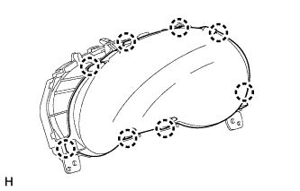
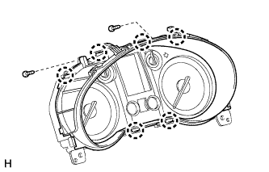

COMBINATION METER > DISASSEMBLY |
| 1. REMOVE COMBINATION METER GLASS |
|  |
Detach the 8 claws and remove the combination meter glass.
| 2. REMOVE NO. 1 COMBINATION METER COVER |
|  |
Remove the 2 screws.
Detach the 6 claws and remove the No. 1 combination meter cover.